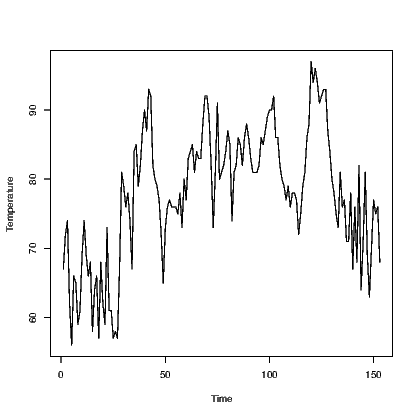
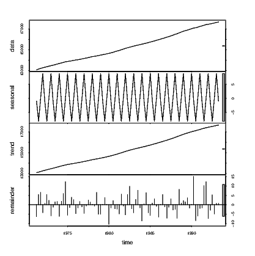
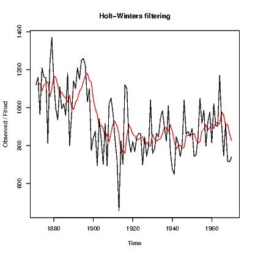
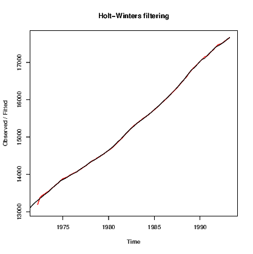
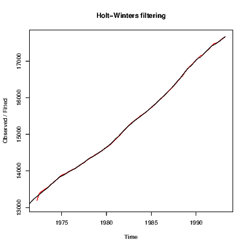

This chapter focuses on some simple time series approaches for univariate time series. At this stage multivariate time series are not included, but could be in future depending on demand. In any case, the methods shown here are certainly not meant to be a comprehensive elucidation of all time series methods. Dealing with just the most commonly taught (and therefore the simplest) methods takes up enough space.
You will need to refer to a standard time series analysis textbook for more complete guidance; many of these are now written with R as the chosen software to support the material in the book.
Given this proliferation of textbooks on the topic of time series analysis, it is no surprise that there are a number of add-on packages written to support them. In this chapter we do not extend beyond the functionality offered by the base distribution of R.
The basic univariate time series, with no missing data is stored in R as a time series object. This is marginally different to a vector in that it has a time stamp or index associated with each observation in the series.
We will use several time series data sets that are available within the default installation of R.
The first is for the level of Lake Huron; the second is the number of lynx that were trapped in Canada; and the third is the flow of the River Nile. More detailed information for all of these series is available using the relevant help function for the series.
You can use the Rcmdas.ts command to convert a vector of observations to a time series object. For example, the Robjectairquality data is recorded in time order. We might want to treat the observed temperatures as a time series by converting it using:
We have seen the flexibility of the plot() command in previous chapters, and now we see another use. Applying the plot() command to a time series object generates a time series plot, as seen in Exhibit 14.1.
Having the class assigned to our data means the plot was enhanced slightly. Check this by comparing the results for the two plots in Exhibit 14.2.
 link to accessible SVG file: (requires correct browser) link to accessible SVG file: (requires correct browser)
One simple method for smoothing out a time series in order to expose its behaviour is to smooth out the observed data using the filter() command to create a moving average. A moving average is often centred, (using the argument sides=2) but if the series is expected to have no trend, then a backwards only (sides=1) focus can be taken. We must determine the width of the moving average, usually using odd-numbered widths.
Exhibit 14.3 shows how different amounts of data can be averaged to change the amount of smoothing.
Stationarity is important for modelling time series. Some descriptive methods also need it. The simplest form of stationarity is when the mean of the series and the variance of the series both remain roughly constant over time, or as explained by Hyndman and Athana-sopou-los (2013), "[a] stationary time series is one whose properties do not depend on the time at which the series is observed". (their book is called Forecasting: Principles and Practice.)
A white noise series of normally distributed data with mean zero and constant variance σ2 is the strongest form of stationarity we seek in our modelling. It is the desired outcome for the residuals from any model we fit to time series data.
The Box.test() function tests for non-stationarity.
while several other tests exist in add-on packages which can be accessed by loading the Rpkgtseries and forecast packages.
Each test is looking at a different facet of what might indicate how a series might not be stationary. Check out the null hypothesis and alternative for each test on its help page.
The autocorrelation and partial autocorrelation function values can be obtained using the acf() and pacf() commands. Plotting these is a common way to determine if any of the values found are of interest in understanding the process being modelled so this is the default action performed by these commands. See Exhibit 14.4 for the plot generated by the acf() command. The pacf() command functions in the same way so is not demonstrated.
To obtain the values of the autocorrelation function (or partial autocorrelation function) in text form, we add an argument to stop the results being plotted.
The basic idea of the decompositions presented in this section is to explain the observed time series values yt in terms of a trend Tt, a seasonal component St and residual error.
Obviously we need a series that has a seasonal component such as the Australian resident numbers measured quarterly from 1971 to 1994.
The decompose() function can create two forms of the decomposition, one of which is additive and the other is multiplicative.
The Rcmdstl command uses loess smoothing to estimate the trend component before finding the seasonal components and the resulting error terms, and is a slightly more advanced process than that offered by decompose((). N.B. there is an stl() command in the stats package and another in the forecast package. We use the simpler one here but need to force R to do so just in case the forecast package version has precedence.

Exponential smoothing is a method for making predictions of the next observation in a time series. The next observation is a weighted average of all observations to date, with the most recent given the greatest weight and the oldest ones having the least impact. This simple version is useful for situations with no seasonal component or systematic trend component.
Note that this is often expressed as
The HoltWinters() command is used for a wide range of models that include the exponential smoother above and allows for trend and seasonality components to be introduced. Starting with the Nile data:

Note that we must explicitly set beta and gamma to FALSE to get the simple exponential smoother.
Adding a linear trend is fairly simple, but the seasonal component can be expressed as either an additive or a multiplicative term. The two forms would be


ar()
ARIMA models require the autoregressive and moving average components to be built on a stationary series. We often need to create a stationary series using differencing as seen in Section 14.4 above. arima()